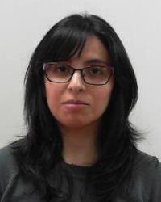

Tesis de Postgrado |
| Segundo Villa Fuentes Programa: Doctorado en Matemática Aplicada, Universidad del Bío-Bío, Chile. Título de la Tesis: Numerical analysis of dual-mixed formulations of nonlinear fluid flow problems posed on nonstandard Banach spaces. Profesor guía: Ricardo Oyarzúa. Profesor co-guía: Sergio Caucao. Periodo de la tesis: Mayo 2019 - Septiembre 2021. |
| Johann Esparza Programa: Magíster en Matemática Aplicada, Universidad Católica de la Santísima Concepción, Chile. Título de la Tesis: Análisis de un método de elementos finitos mixtos aumentado para el problema de Brinkman-Forchheimer convectivo. Profesor guía: Sergio Caucao. Periodo de la tesis: Agosto de 2022 - Junio de 2023. |
|
| Lady Angelo Programa: Magíster en Matemática Aplicada, Universidad Católica de la Santísima Concepción, Chile. Título de la Tesis: Análsis numérico de una formulación mixta para flujos magnetohidrodinámicos estacionarios en medios porosos. Profesor guía: Jessika Camaño. Profesor co-guía: Sergio Caucao. Periodo de la tesis: Agosto de 2022 - Junio de 2023. |
|
|  | Camila Campos Mora Programa: Magíster en Matemática Aplicada, Universidad Católica de la Santísima Concepción, Chile. Título de la Tesis: Contribuciones a la aproximación de ecuaciones diferenciales parciales elípticas vía adaptatividad de mallas. Profesor guía: Tomás Barrios. Profesor co-guía: Rommel Bustinza. Periodo de la tesis: Septiembre de 2019 - Diciembre 2022. |
| Eduardo Vino Machicado Programa: Magíster en Matemática Aplicada, Universidad Católica de la Santísima Concepción, Chile. Título de la tesis: Un método de elementos finitos estabilizado adaptativo para el problema acoplado de Darcy-Stokes. Profesor guía: Abner Poza. Profesor cotutor: Rodolfo Araya. Periodo de la tesis: Septiembre 2020 - Abril 2022. |